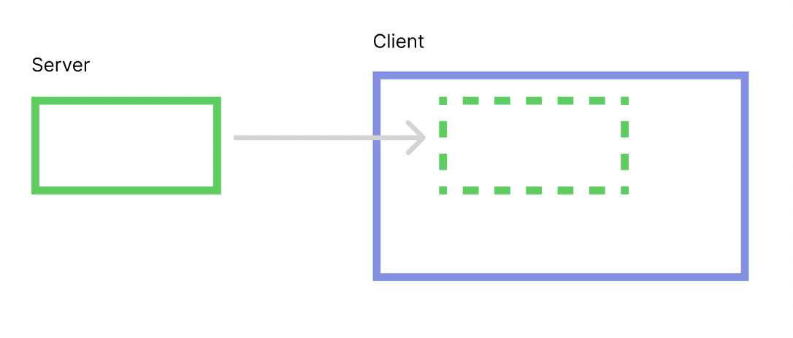
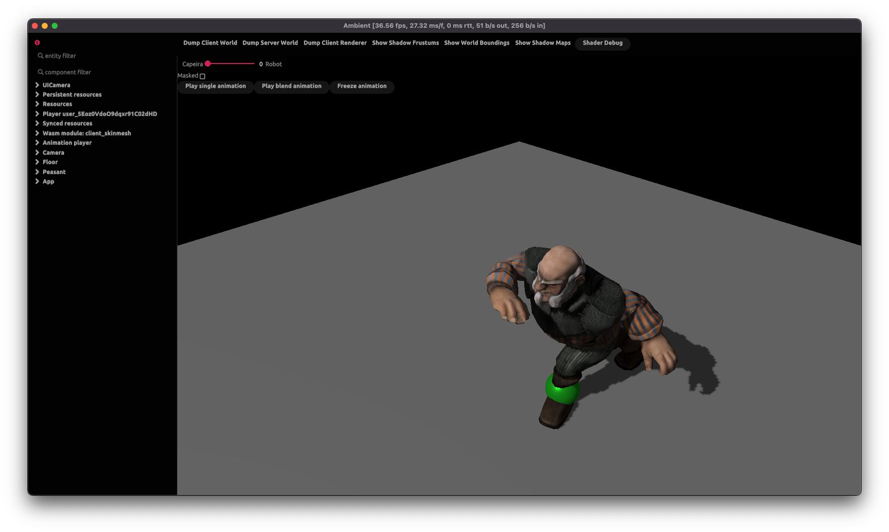

Introduction
Ambient is a runtime for building high-performance multiplayer games and 3D applications, powered by WebAssembly, Rust and WebGPU.
See our announcement blog post for more details.
Design principles
- Seamless networking: Ambient is both your server and client. All you need to do is to build your server and/or client-side logic: the runtime handles synchronization of data for you.
- Isolation: Projects you build for Ambient are executed in isolation through the power of WebAssembly - so that if something crashes, it won’t take down your entire program. It also means that you can run untrusted code safely.
- Data-oriented design: The core data model of Ambient is an entity component system which each WASM module can manipulate.
- Language-agnostic: You will be able to build Ambient modules in any language that can compile to WebAssembly. At present, Rust is the only supported language, but we are working on expanding to other languages.
- Single executable: Ambient is a single executable which can run on Windows, Mac and Linux. It can act as a server or as a client.
- Interoperability: Ambient allows you to define custom components and "concepts" (collections of components). As long as your Ambient projects use the same components and concepts, they will be able to share data and interoperate, even if they have no awareness of each other.
- Asset pipeline and streaming: Ambient has an asset pipeline that is capable of compiling multiple asset formats, including
.glband.fbx. The assets are always streamed over the network, so your clients will receive everything they need when they join. - Powerful renderer: The Ambient renderer is GPU-driven, with both culling and level-of-detail switching being handled entirely by the GPU. By default, it uses PBR. It also supports cascading shadow maps and instances everything that can be instanced.
See the documentation for a guide on how to get started, or browse the guest/rust/examples for the version of Ambient you're using. The main branch is a development branch and is likely incompatible with the latest released version of Ambient.
Installing
The easiest way to install Ambient is to download the latest binary release from the GitHub releases. Currently, there are builds for Windows x64, Linux x64, and Mac ARM64. For other platforms, use the installing from Git method.
You will also need Rust installed with the wasm32-wasi toolchain so that you can compile Ambient modules.
Note that Ambient compiles Rust code with stable Rust, so you must make sure that wasm32-wasi is installed for stable:
rustup target add --toolchain stable wasm32-wasi
Installing from Git
Ambient can be installed through cargo install.
This will automatically download the source, compile and install Ambient from your system. Our minimum supported Rust version is 1.67.0.
Installing the latest published release
This is the recommended method of installing Ambient from source if the downloadable binaries are insufficient. The latest published release should be used unless you have a specific reason to use the development version.
cargo install --git https://github.com/AmbientRun/Ambient.git --tag v0.2.1 --locked --force ambient
Installing the latest development version
Ambient is actively developed on the main branch of the repository. This branch contains in-development changes, including new features, bug fixes and breaking changes. This method can be used if you would like to try out these changes.
Note: The main branch is subject to frequent breaking changes, including potential new bugs and decreased stability, and is not a stable development target for projects. Using the main branch is not recommended if you are unable to actively update your project to accommodate breaking changes.
cargo install --git https://github.com/AmbientRun/Ambient.git --locked --force ambient
Note: If you are running a project outside of the guest/rust workspace, it is likely that the published version of the API will be incompatible with main, and you will need to specify the dependency manually.
Additionally, the --locked flag is recommended to ensure that the correct packages are installed and that the build is reproducible between machines.
Optional features
You can supply these feature flags to get optional features that are disabled by default:
cargo install --git https://github.com/AmbientRun/Ambient.git ambient --features assimp --locked --force
assimp: This adds support for assimp, which loads ~40 additional model file formats, such asobj, text-basedfbxand much more
Build dependencies: Linux/Ubuntu
For the above to work on Linux, you also need to install the following build dependencies:
apt-get install -y \
build-essential cmake pkg-config \
libfontconfig1-dev clang libasound2-dev ninja-build
Installing via asdf (Linux, Macos)
Thanks to @jtakakura, Ambient can also be installed using asdf by running asdf plugin add ambient. For more details, visit https://github.com/jtakakura/asdf-ambient.
Running on headless Linux/Ubuntu
To run on a headless Linux machine, install the following dependencies in addition to the dependencies specified above:
add-apt-repository ppa:oibaf/graphics-drivers -y
apt-get update
apt install -y libxcb-xfixes0-dev mesa-vulkan-drivers
Ambient currently assumes that you have access to GPU drivers (but not necessarily a GPU) in headless mode. This requirement may be relaxed in future.
Dockerfile
A Dockerfile is also provided that provides a headless Debian environment with all of the dependencies required to run Ambient as a server. This Dockerfile is intended for development, not production, so it has more dependencies than are strictly required to run Ambient.
To build the Dockerfile:
docker build -t ambient .
To run the Dockerfile with bash in the current directory:
docker run --rm -it -e bash -v "$(pwd)":/app ambient
Setting up your IDE
Our recommended IDE is Visual Studio Code (VSCode).
Visual Studio Code (VSCode)
Install Visual Studio Code, then install the following plugins:
- rust-analyzer, as described here.
- CodeLLDB. This one is optional, but with it you can launch your ember from with VSCode by pressing F5.
ambient new will set up your ember for VSCode by default, by creating a .vscode/settings.json for you.
Emacs
There are multiple ways to configure Emacs as a Rust IDE. The following assumes you are using rustic, lsp-mode and rust-analyzer libraries. Robert Krahn provides a comprehensive guide to configuring Emacs for Rust development
Once you have Emacs configured for general Rust development, you need to set some explicit values for Ambient embers. Ambient uses some custom cargo configuration values that Emacs and rust-analyzer need to know about. You can manually set these variables with the following elisp:
(setq lsp-rust-analyzer-cargo-target "wasm32-wasi"
lsp-rust-analyzer-cargo-watch-args ["--features" "client server"]
lsp-rust-features ["client" "server"])
Furthermore, you can add a .dir-locals.el file to your Ambient ember directory that Emacs will pick up and load settings for. This is similar to the .vscode/settings.json that is created by default. This is an example .dir-locals.el file:
((rustic-mode . ((eval . (setq-local lsp-rust-analyzer-cargo-target "wasm32-wasi"))
(eval . (setq-local lsp-rust-analyzer-cargo-watch-args ["--features" "client server"]))
(eval . (setq-local lsp-rust-features ["client" "server"])))))
Other IDEs
To get rust-analyzer to work, you need to make sure it's building with the server and client feature flags enabled. See .vscode/settings.json for an example.
Overview of Ambient
Let's start with a rough overview of Ambient to give you an idea of how it works.
The database (ECS)
The most central thing in Ambient is the ECS "world". You can think of it as a database that stores everything in your application.
The world is a collection of entities. An entity is a collection of components and a component is a
(name, value) pair. For example, you could have an entity with two components:
entity 1932:
- translation: (5, 2, 0)
- color: (1, 0, 0, 1)
If you compare this to a traditional SQL database, you can think of entities as rows and components as columns. Note that there is no equivalent of a table, though: any component can be attached to any entity.
Client/server
The next thing to know is that Ambient is built around a client/server architecture. Both the server and the client have a world of their own (green and blue boxes in the image below).

The server's world is automatically replicated to all clients' worlds. The clients can
add additional entities and/or components to their local world. Typically, you'll
have game state on the server (for instance { unit: "orc", level: 10 }), and visual
effects or other client-local state on the clients (for instance, spawn fireworks when
the orc levels up).
Note that the replication is one-way. Any changes you make to your client world will not be replicated to the server. To communicate from the client to the server, you will typically use message passing instead.
Getting started
Ambient projects are called embers. An ember is a collection of code, assets, and configuration that can be run in Ambient. They can be combined with other embers to create a game.
Creating a ember
To create a ember, run:
ambient new my-ember
This will generate a new ember with a simple Rust module and an Ambient ember manifest.
Running a ember
This ember can be run:
cd my-ember
ambient run
From here on, you can open up the ember in your favorite IDE and start editing the code. If you need a recommendation for an IDE, see Setting up your IDE. If using VS Code, the ember can be launched with the system-installed Ambient using the F5/Debug button, which is preconfigured to run the current ember.
For more details about the API, see API.
Multiplayer
Every Ambient ember is multiplayer by default. To start the ember in server-only mode, use the following command:
ambient serve
This will output a line which looks like this:
[2023-04-13T09:05:42Z INFO ambient_network::server] Proxy allocated an endpoint, use `ambient join proxy-eu.ambient.run:9898` to join
The server can now be connected to by anywhere on the internet (it's proxied by default), using the provided command:
ambient join proxy-eu.ambient.run:9898
Ambient always streams all assets, so the only thing anyone needs to connect to your server is Ambient itself. Try sending the command to a friend, and play your game together!
Running examples
You can either run the examples from the latest released version of Ambient, or with the development main branch.
However, the version of Ambient must match the version that the examples were built for. For instance, if you are running the main branch of Ambient, you must also run the main branch of the examples.
Running examples from the latest release
- Download the Ambient executable from the releases page.
- Download the
examples.zipfile from the same page. - Extract both, and use the extracted Ambient to run the examples:
./ambient run examples/basics/primitives
Running examples from main
- Clone the GitHub repository.
- Install Ambient with
cargo install --path app ambient. - Run the examples in the
guest/rust/exampledirectory:ambient run guest/rust/examples/basics/primitives
Running examples from main as a developer
If you are a developer actively working on Ambient, you can run the examples from the guest/rust/examples directory directly, without having to install Ambient.
- Clone the GitHub repository.
- Run the examples in the
guest/rust/exampledirectory:cargo run --release -- guest/rust/examples/basics/primitives
To help with this, the Ambient repository has a tool called Campfire. It offers a convenient way to run examples:
cargo cf run primitives
The name is based on the end of the path, so additional context can be provided if necessary:
cargo cf run basics/primitives
API
Reference documentation
The full API reference for Ambient can be found on docs.rs.
Note that the published API may not be up to date with the latest Git commit of the runtime - if you are using bleeding-edge features, you will need to document the API yourself using cargo doc -p ambient_api in the guest/rust folder.
Debugging
Running with the debugger
When the client is run with the AMBIENT_DEBUGGER environment variable, or with the --debugger flag, the game is surrounded with a debugger:
AMBIENT_DEBUGGER=1 ambient run examples/minigolf
# or `$env:AMBIENT_DEBUGGER=1` on Windows/PowerShell
# or `ambient run --debugger examples/minigolf`

These can be used to inspect the state of the client and server ECSes, as well as the renderer. When one of these buttons are pressed, a YAML file will be created with the corresponding state, and its path will be written to stdout:
[2023-02-23T17:47:36Z INFO ambient_debugger] Wrote "Ambient/tmp/server_hierarchy.yml"
Here is some sample output for the server ECS:
- "id=RsE148MNkdB24bFWQrfeMA loc=48:0":
"core::app::main_scene": ()
"core::ecs::children": "[EntityId(koK-dbeCZDrcHzsT7QELUw, 110383077981027712353063371358575952530)]"
"core::transform::translation": "Vec3(-5.0, -0.0019752309, 2.8536541)"
"core::transform::scale": "Vec3(1.0, 1.0, 1.0)"
"core::transform::rotation": "Quat(0.0, 0.0, 0.0, 1.0)"
"core::transform::local_to_world": "Mat4 { x_axis: Vec4(1.0, 0.0, 0.0, 0.0), y_axis: Vec4(0.0, 1.0, 0.0, 0.0), z_axis: Vec4(0.0, 0.0, 1.0, 0.0), w_axis: Vec4(-5.0, -0.001970334, 2.8387475, 1.0) }"
"core::transform::spherical_billboard": ()
children:
- "id=koK-dbeCZDrcHzsT7QELUw loc=46:0":
"core::app::main_scene": ()
"core::transform::local_to_world": "Mat4 { x_axis: Vec4(0.02, 0.0, 0.0, 0.0), y_axis: Vec4(0.0, -0.02, 1.7484555e-9, 0.0), z_axis: Vec4(0.0, -1.7484555e-9, -0.02, 0.0), w_axis: Vec4(-5.0, -0.001970334, 2.8387475, 1.0) }"
"core::transform::local_to_parent": "Mat4 { x_axis: Vec4(0.02, 0.0, 0.0, 0.0), y_axis: Vec4(0.0, -0.02, 1.7484555e-9, 0.0), z_axis: Vec4(0.0, -1.7484555e-9, -0.02, 0.0), w_axis: Vec4(0.0, 0.0, 0.0, 1.0) }"
"core::transform::mesh_to_local": "Mat4 { x_axis: Vec4(1.0, 0.0, 0.0, 0.0), y_axis: Vec4(0.0, 1.0, 0.0, 0.0), z_axis: Vec4(0.0, 0.0, 1.0, 0.0), w_axis: Vec4(0.0, 0.0, 0.0, 1.0) }"
"core::transform::mesh_to_world": "Mat4 { x_axis: Vec4(0.02, 0.0, 0.0, 0.0), y_axis: Vec4(0.0, -0.02, 1.7484555e-9, 0.0), z_axis: Vec4(0.0, -1.7484555e-9, -0.02, 0.0), w_axis: Vec4(-5.0, -0.001970334, 2.8387475, 1.0) }"
"core::rendering::color": "Vec4(1.0, 0.3, 0.3, 1.0)"
"core::ui::text": '"user_470i61dDp7FKjGFQetZ53O"'
"core::ui::font_size": "36.0"
"core::player::user_id": "..."
children: []
Increasing log output
You can also increase the logging output from specific internal modules using the RUST_LOG environment variable,
which accepts module=log_level pairs that are comma-sepparated. Here are some general tips:
- To debug your asset pipeline, set
RUST_LOG=ambient_build=info. For even more logs, you can setRUST_LOG=ambient_build=info,ambient_model_import=info. - To debug rendering, set
RUST_LOG=ambient_renderer=info. - To debug networking, set
RUST_LOG=ambient_network=info. - To debug physics, set
RUST_LOG=ambient_physics=info. - To debug everything, set
RUST_LOG=info. To get even more logs setRUST_LOG=debug.
Physics
Ambient uses PhysX 4.1 from Nvidia for physics simulation. As a result, the entire physics scene can be visualized using the PhysX Visual Debugger (PVD).
By default, physics debugging is on. To debug your scene, install and start PVD, then start an Ambient project. Your project's scene should automatically be visible within PVD. For more details on how to use PVD, see the guide.
Assets
When assets are compiled by the assets pipeline, the resulting artifacts will be output to the build directory in your project. These can be examined to determine whether or not your source was accurately compiled by the asset pipeline.
Additionally, if there are fatal errors or warnings, the asset pipeline will report them during the compilation process.
Networking
Debugging which components are sent over the network
Use the environment flag AMBIENT_DEBUG_ENTITY_STREAM to debug entities and components sent over the network to the client. AMBIENT_DEBUG_ENTITY_STREAM=FULL will output everything, AMBIENT_DEBUG_ENTITY_STREAM=true (or anything else) will output a summary.
Profiling
Ambient supports profiling through puffin. To use it, follow these steps:
-
Build Ambient with profiling enabled (add the
profilefeature flag). From the root folder:cargo install --path app --features profile -
Install puffin_viewer:
cargo install puffin_viewer -
Start Ambient:
ambient run guest/examples/basics/primitives -
Start
puffin_viewer:puffin_viewer
You should now see real-time performance metrics for Ambient.
Getting content for your game
Content, including assets, is a key part of any game. For a polished game, you will likely want to build your own content. However, for prototyping, or for a game jam, you may want to use existing content.
This page lists some sources of content that you can use in your game.
For details on how to import the content, see asset pipeline.
Characters and animations
- Mixamo: Free characters and animations.
Models
- Unity asset store: Lots of content. The Ambient asset pipeline supports importing Unity models. However, ensure that the license allows you to use the content in your game.
- Quixel: Realistic scanned models. The asset pipeline supports importing Quixel models. However, ensure that the license allows you to use the content in your game.
- Sketchfab: Many models.
Materials
- https://ambientcg.com/: Many materials.
Collections
- awesome-cc0: A list of Creative Commons 0 (CC0) licensed assets. These assets can be used for any purpose, including commercially.
Runtime
Coordinate system
By default, Ambient uses a right-handed coordinate system for NDC with z from 1 to 0 (i.e. reverse-z with the near plane at z=1, and the far plane at z=0).
For world coordinates, it uses a left-handed system. We consider x to be right, y to be back, and z to be up (same as Unreal). This means that the default camera without any transformation is lying on its stomach and facing downwards.
NDC:
y
|
|
0 ---> x
/
z (coming out of the screen)
World:
z (up)
|
0 --- x (right)
/
y
WebGPU uses positive-y as up in its NDC, and z from 0 to 1 (https://gpuweb.github.io/gpuweb/#coordinate-systems) - that is, it is left-handed.
Freya Holmér has produced an overview of which programs use which coordinate systems, which can be found here.
For more information on our use of reverse-z, consult the following links:
- https://developer.nvidia.com/content/depth-precision-visualized
- https://www.danielecarbone.com/reverse-depth-buffer-in-opengl/
Ember
All Ambient embers must have an ambient.toml manifest that describes their functionality. This format is in flux, but is inspired by Rust's Cargo.toml.
At present, dependencies are not supported, but this will change in future.
WebAssembly
All .wasm components in the build/{client, server} directory will be loaded for the given target, regardless of provenance. The .wasm filenames must be snake-case ASCII identifiers, like the id in the manifest.
This means any .wasm that implements the Ambient WIT interface and targets WASI snapshot 2 (or uses an adapter that targets WASI snapshot 2) should run within Ambient.
As a convenience for Rust users, Ambient will automatically build a Cargo.toml at the root of your ember, if present, as wasm32-wasi for the features specified in build.rust.feature-multibuild in ambient.toml (defaults to client and server).
The default new ember template will create client.rs and server.rs files, with a Cargo.toml preconfigured with targets for both. The resulting WASM bytecode files are then converted to components and placed in build/{client, server}.
The process it takes is equivalent to these commands:
cd your_ember
cargo build --target wasm32-wasi --features client
wasm-tools component new target/wasm32-wasi/debug/your_ember_client.wasm -o build/client/your_ember.wasm --adapt wasi_snapshot_preview1.wasm
cargo build --target wasm32-wasi --features server
wasm-tools component new target/wasm32-wasi/debug/your_ember_server.wasm -o build/server/your_ember.wasm --adapt wasi_snapshot_preview1.wasm
using wasm-tools and a bundled version of the preview2-prototyping WASI adapter.
Reference
Identifiers are snake-case ASCII identifiers (as a string), and IdentifierPaths are a double-colon-separated list of Identifiers. For example, my_ember is an Identifier, and my_ember::my_component is an IdentifierPath.
Ember / [ember]
The ember section contains metadata about the ember itself, such as its name and version.
| Property | Type | Description |
|---|---|---|
id | Identifier | Required. The ember's snake-cased ID. |
name | String | Required. A human-readable name for the ember. |
description | String | Required. A human-readable description of the ember. |
version | String | Required. The ember's version, in (major, minor, patch) format. Semantically versioned. |
Build / [build]
The build section contains settings related to building the ember.
Rust Settings / [build.rust]
| Property | Type | Description |
|---|---|---|
feature-multibuild | String[] | Optional. An array of strings defining the features to be used when building the ember. This is used to build the same code for both client and server. Client and server are built by default (e.g. ["client", "server"]); this is exposed so that you can disable building one side entirely if required. |
Components / [components]
The components section contains custom components defined by the ember. Components are used to store data on entities.
This is a TOML table, where the keys are the component IDs (IdentifierPath), and the values are the component definitions.
| Property | Type | Description |
|---|---|---|
type | ComponentType | Required. The type of the component. |
name | String | Required. A human-readable name for the component. |
description | String | Required. A human-readable description of the component. |
attributes | ComponentAttribute[] | Optional. An array of attributes for the component. |
A ComponentType is either:
-
a string that can be one of the following primitive types:
Bool: a boolean value, true or falseEmpty: a component that has no value; most often used for tagging an entityEntityId: an entity IDF32: a 32-bit floating point valueF64: a 64-bit floating point valueMat4: a 4x4 32-bit floating point matrixQuat: a 32-bit floating point quaternionString: a UTF-8 stringU8: an 8-bit unsigned integer valueU16: an 16-bit unsigned integer valueU32: a 32-bit unsigned integer valueU64: a 64-bit unsigned integer valueI8: an 8-bit signed integer valueI16: an 16-bit signed integer valueI32: a 32-bit signed integer valueI64: a 64-bit signed integer valueUvec2: a 2-element 32-bit unsigned integer vectorUvec3: a 3-element 32-bit unsigned integer vectorUvec4: a 4-element 32-bit unsigned integer vectorIvec2: a 2-element 32-bit signed integer vectorIvec3: a 3-element 32-bit signed integer vectorIvec4: a 4-element 32-bit signed integer vectorVec2: a 2-element 32-bit floating point vectorVec3: a 3-element 32-bit floating point vectorVec4: a 4-element 32-bit floating point vectorDuration: A time span. Often used as a timestamp, in which case it designates the duration since Jan 1, 1970.
-
a contained type of the form
{ type = "Vec", element_type = ComponentType }or{ type = "Option", element_type = ComponentType }- Note that
VecandOptionare the only supported container types, andelement_typemust be a primitiveComponentType(that is, you cannot have nested contained types).
- Note that
A ComponentAttribute is a string that can be one of the following:
Debuggable: this component can have its debug value printed, especially in ECS dumpsNetworked: this component is networkedResource: this component will only ever be used as a resource; will error if attached to an entityMaybeResource: this component can be used as a resource or as a component; necessary if treating this component as a resourceStore: this component's value should be persisted when the world is saved
Concepts / [concepts]
The concepts section contains custom concepts defined by the ember. Concepts are used to define a set of components that can be attached to an entity.
This is a TOML table, where the keys are the concept IDs (Identifier), and the values are the concept definitions.
| Property | Type | Description |
|---|---|---|
name | String | Required. A human-readable name for the concept. |
description | String | Required. A human-readable description of the concept. |
extends | String[] | Optional. An array of concepts to extend. Must be defined in this ember manifest. |
components | Map<IdentifierPath, any> | Required. An object containing the components and their default values. Must be components defined in this ember manifest. |
The components is an object where the keys are IdentifierPaths of components defined in the ember manifest (at this time, it must be in the same manifest), and the values are the default values for those components in the concept.
Messages / [messages]
The messages section contains custom messages defined by the ember. Messages are used to communicate between client and server.
For an example of how to use messages, see the messaging example.
This is a TOML table, where the keys are the message IDs (Identifier), and the values are the message definitions.
| Property | Type | Description |
|---|---|---|
name | String | Required. A human-readable name for the message. |
description | String | Required. A human-readable description of the message. |
fields | Map<Identifier, ComponentType> | Required. An object containing the fields and their types. Must be one of the types supported for components. |
Sample ambient.toml
A sample ambient.toml is shown below:
#
# The ember section describes all ember metadata.
#
[ember]
# This must be a snake-cased name.
id = "my_cool_ember"
# This name is human-readable and can contain anything.
name = "My Cool Ember"
# This description is human-readable and can contain anything.
description = "A sample ember that's the coolest thing ever."
# Embers are expected to use (major, minor, patch) semantic versioning.
# Other formats are not accepted. This requirement may be relaxed later.
version = "0.0.1"
#
# Build settings.
#
[build]
# Rust-specific settings.
[build.rust]
# `cargo build` will be run with each of these features to produce a separate WASM binary,
# which is then componentized and copied into a folder of the corresponding name in `build/`.
# This is used to build the same code for both client and server.
# Client and server are built by default; this is exposed so that you can disable building one
# side entirely if required.
# You will normally not need to touch this.
feature-multibuild = ["client", "server"]
#
# Custom components defined by this ember.
# Components are used to store data on entities.
#
[components]
# Inline tables can be used.
cool_component = { type = "I32", name = "Cool Component", description = "A cool component", attributes = ["Debuggable"] }
# Explicit tables can also be used.
[components.cool_component2]
# At time of writing, supported component types are:
# Empty, Bool, String,
# EntityId,
# F32, F64, Mat4, Quat,
# U8, U16, U32, U64,
# I8, I16, I32, I64,
# Vec2, Vec3, Vec4,
# Uvec2, Uvec3, Uvec4,
# Ivec2, Ivec3, Ivec4
# or
# { type = "Vec", element_type = "TypeFromAbove" }
# { type = "Option", element_type = "TypeFromAbove" }
# You cannot nest container types.
type = "I32"
name = "Cool Component 2"
description = "A cool component 2"
# At time of writing, supported attributes are:
# Debuggable: this component can have its debug value printed, especially in ECS dumps
# Networked: this component is networked
# Resource: this component will only ever be used as a resource; will error if attached to an entity
# MaybeResource: this component can be used as a resource or as a component; necessary if treating this component as a resource
# Store: this component's value should be persisted when the world is saved
attributes = ["Debuggable"]
# Namespaces are also supported:
"cool::component" = { type = "I32", name = "Cool Component", description = "A cool component", attributes = ["Debuggable"] }
#
# Custom concepts defined by this ember.
# Concepts are used to define a set of components that can be attached to an entity.
#
[concepts]
[concepts.concept1]
# The name of the concept.
name = "Concept 1"
# The description of the concept.
description = "The best"
[concepts.transformable.components]
# Each component needs to be specified with a default value.
# At time of writing, you can only use components defined in this ember manifest.
cool_component = 0
# A concept that extends `concept1` and has both `cool_component` and `cool_component2`.
[concepts.concept2]
name = "Concept 2"
description = "The successor"
# At time of writing, all concepts being extended must be defined in this ember manifest.
extends = ["concept1"]
[concepts.concept2.components]
cool_component2 = 1
#
# Custom messages defined by this ember.
# Messages are used to communicate between client and server.
#
[messages]
[messages.input]
# The name of the message.
name = "Input"
# The description of the message.
description = "Describes the input state of the player."
[messages.input.fields]
# Each field in the message must have a type, name and description. The supported types are the same as for components.
direction = { type = "Vec2", name = "Direction", description = "The movement direction of the player." }
mouse_delta_x = { type = "F32", name = "Mouse delta X", description = "The mouse delta X." }
Entity Component System (ECS)
An entity component system (ECS) is an architectural pattern that is used in game development to organize the logic of a game. It is a data-oriented approach to programming, which means that it focuses on the data that is being processed, rather than the logic that is processing it.
The ECS pattern is based on three concepts: entities, components, and systems. Entities are the objects that exist in the game world. Components are the data that describe the entities. Systems are the logic that processes the components.
Conceptually, the ECS can be considered to be a database, where the entities are the rows, the components are the columns, and the systems are the queries. The ECS is designed to be fast and efficient, and is used in many modern game engines.
In addition to the three core concepts, Ambient also supports concepts, which are a way of defining a collection of components that correspond to some concept in the game world. For example, a Player concept might be defined as a collection of components that describe the player's health, inventory, and position.
Entities
Entities are the objects that exist in the game world. They consist of a unique identifier (an EntityId, which is 128 bits) and a set of components. Entities are created and destroyed dynamically during runtime.
Components
Components are pieces of data that can be attached to entities. They store information like health, position, velocity, and more. Components are defined in the ember manifest, and are attached to entities at runtime.
They are defined in the manifest (and not your codebase) so that other embers that depend on your ember can use them when interacting with the ECS. Additionally, this means that component definitions are not tied to a specific language, and can be used in any language that supports the runtime.
For more detail on what components can be, see the ember manifest reference. Note that component types cannot be nested - you cannot have a component that is a Vec of Vecs.
Attributes
Components can have attributes that modify their behavior. These attributes are defined in the ember manifest, and are used by the runtime to determine how to handle the component.
Debuggable
This component can have its debug value printed. This is most often used for ECS dumps, but can also be used for debugging purposes.
Networked
This component is networked to the client. This means that the component's value will be sent to the client when the component is created, and whenever the component's value changes.
Note that a component that is Networked on the client will not be networked to the server. Ambient's ECS networking is strictly server to client; to send data from the client to the server, you must use messages.
Resource
This component will only ever be attached to the entity::resources() entity, which is always present in the world. This is useful for storing global state that is not tied to a specific entity.
This component will error when attached to any other entity. Note that the resources entity is not networked; if you want networked global state, consider using entity::synchronized_resources().
MaybeResource
This component can be used as either a resource or as a component. This is useful for components that are traditionally attached to entities, but are sometimes attached to the resource entity.
This is most commonly used for components that are used in the resources of a prefab to provide metadata about the prefab. It is unlikely you will need to interact with this directly as a user.
Store
This component's value will be stored in the world file. This is useful for components that store persistent state, like the player's inventory.
At present, Ambient does not support persistency. This functionality will be added in the future.
Systems
Systems are the logic that processes the components. Ambient guest code cannot directly define systems; instead, they rely on queries that run every frame. These function identically to systems for now, but systems may be formally introduced in the future to allow for more advanced functionality, including automatic parallelism of the ECS.
Queries are powerful, and can be used to query for entities that have a specific component, or a specific set of components. At present, they are entirely structural, so they cannot be used to query for entities that have a specific value for a component.
There are three types of queries in Ambient at present: general queries, (de)spawn queries, and change queries.
General queries are the most common type of query. They are used to query for entities that have a specific set of components:
#![allow(unused)] fn main() { query((player(), player_camera_ref(), translation(), rotation())).each_frame(move |players| { for (_, (_, camera_id, pos, rot)) in players { let forward = rot * Vec3::X; entity::set_component(camera_id, lookat_target(), pos); entity::set_component(camera_id, translation(), pos - forward * 4. + Vec3::Z * 2.); } }); }
Spawn queries are used to query for when specific components are added to entities (including the entire entity being spawned). They are useful for spawning entities when a player joins the game, for example:
#![allow(unused)] fn main() { spawn_query(player()).bind(move |players| { // For each player joining, spawn a random colored box somewhere for _ in players { Entity::new() .with_merge(make_transformable()) .with_default(cube()) .with(translation(), rand::random()) .with(color(), rand::random::<Vec3>().extend(1.0)) .spawn(); } }); }
Despawn queries are similar to spawn queries, but track the removal of components from entities (including the entire entity being despawned). They are useful for cleaning up entities when a player leaves the game, for example:
#![allow(unused)] fn main() { despawn_query(user_id()).requires(player()).bind(move |players| { for (_, user_id) in players { println!("Player {user_id} left"); } }); }
Finally, change queries are activated when one of the components they track change. Note that the components that are returned by the query are separate from the components that are tracked; this allows you to get more information about the entity than just the components that changed.
#![allow(unused)] fn main() { change_query((user_id(), health())).track_change(health()).requires(player()).bind(move |players| { for (_, (user_id, health)) in players { println!("Player {user_id} now has {health} health"); } }); }
In addition to specifying components in the query, you can also specify components that must be needed using .requires or components that must not be present using .excludes. These are useful for filtering out entities that should not be processed by the query.
Concepts
Concepts are defined in the ember manifest, and are used to define a collection of components that correspond to some concept in the game world. For example, a Player concept might be defined as a collection of components that describe the player's health, inventory, and position.
Concepts have an ID (specified as the name of their TOML table), a name, a description, and a list of components with defaults. Additionally, they can extend other concepts, which will cause them to inherit the components and defaults of the concept they extend.
For illustration, here are two concepts that are defined as part of Ambient's default manifest:
[concepts.transformable]
name = "Transformable"
description = "Can be translated, rotated and scaled."
[concepts.transformable.components]
"core::transform::translation" = [0.0, 0.0, 0.0]
"core::transform::scale" = [1.0, 1.0, 1.0]
"core::transform::rotation" = [0.0, 0.0, 0.0, 1.0]
[concepts.camera]
name = "Camera"
description = "Base components for a camera. You will need other components to make a fully-functioning camera."
extends = ["transformable"]
[concepts.camera.components]
"core::app::name" = "Camera"
"core::camera::near" = 0.1
"core::camera::projection" = [1.0, 0.0, 0.0, 0.0, 0.0, 1.0, 0.0, 0.0, 0.0, 0.0, 1.0, 0.0, 0.0, 0.0, 0.0, 1.0]
"core::camera::projection_view" = [1.0, 0.0, 0.0, 0.0, 0.0, 1.0, 0.0, 0.0, 0.0, 0.0, 1.0, 0.0, 0.0, 0.0, 0.0, 1.0]
"core::camera::active_camera" = 0.0
"core::transform::local_to_world" = [1.0, 0.0, 0.0, 0.0, 0.0, 1.0, 0.0, 0.0, 0.0, 0.0, 1.0, 0.0, 0.0, 0.0, 0.0, 1.0]
"core::transform::inv_local_to_world" = [1.0, 0.0, 0.0, 0.0, 0.0, 1.0, 0.0, 0.0, 0.0, 0.0, 1.0, 0.0, 0.0, 0.0, 0.0, 1.0]
In this example, the "camera" concept contains all of the components from a transformable, as well as components of its own. This means that any entity that has the "camera" concept will also have the components from the "transformable" concept.
Concepts are exposed to your Rust code in three ways, using camera as an example:
camera(): returns a tuple of the components that are part of thecameraconcept. This can be used within queries to query for entities that have thecameraconcept.make_camera(): makes aEntitywith the components of thecameraconcept, which can then be spawned.is_camera(id): returns true if the entity with the given ID contains all of the components of thecameraconcept.
What is the components! macro in host code?
This section is not relevant to those developing games using Ambient, and is only relevant to those who are developing Ambient itself.
At the root of the repository, there is an ambient.toml that defines all of the guest-visible components for Ambient. This is what runtime developers will typically add to when they want to add new components to Ambient.
However, there are some components that are not visible to guest code, but are still defined in host code. These components are defined using the components! macro. It is used like this:
#![allow(unused)] fn main() { components!("app", { @[MakeDefault[default_title], Debuggable, MaybeResource] window_title: String, fps_stats: FpsSample, }); }
Unlike ambient.toml, components can be of any type that meet a set of requirements. Additionally, the components defined here will not be visible to guest code. The attributes available are a superset of those available to ambient.toml.
These component definitions are primarily useful for internal data that needs to be attached to entities, but should not be or cannot be visible to guest code. For example, the FpsSample struct in the example above is a complex type and cannot be stored in a component in guest code, but it can be stored in a component in host code.
Models
Models are 3D objects (characters, vehicles, buildings, etc) that can be rendered to the screen. They can be loaded from files, or procedurally generated.
Importing a model
To use a model in Ambient, place it in the assets folder, and then create a assets/pipeline.toml file:
[[pipelines]]
type = "Models"
See asset pipeline for more details.
Spawning a model
The model can then be spawned using prefab_from_url, assuming that output_prefabs is enabled in your assets/pipeline.toml file (it is enabled by default).
#![allow(unused)] fn main() { Entity::new() .with_merge(make_transformable()) .with(prefab_from_url(), asset::url("assets/MyModel.fbx").unwrap()) .spawn(); }
The prefabs generated by the pipeline include the visual model and physics colliders.
If the code above lives in your server.rs file, it will create the physics colliders on the server.
The model, including any skeletons it may have, will always be loaded and spawned on the clientside, regardless of if the above code lives in server.rs or client.rs. It is not guaranteed that the model will be loaded on the server, so you should not rely on it being there.
You can also use model_from_url to load a model without the physics colliders.
Animating a model
See animations.
Getting models for your project
See getting content for a list of places where you can get models.
Manipulating bones
You can get individual bones of a loaded model using the animation::get_bone_by_bind_id function.
#![allow(unused)] fn main() { let unit_id = Entity::new() .with_merge(make_transformable()) .with(prefab_from_url(), asset::url("assets/MyModel.fbx").unwrap()) .spawn(); let left_foot = animation::get_bone_by_bind_id(unit_id, &BindId::LeftFoot).unwrap(); entity::set_component(left_foot, rotation(), Quat::from_rotation_x(0.3)); }
This will only work on the client at present, as the skeleton is not loaded on the server.
Hierarchies and transforms
Ambient supports hierarchies of entities using the parent and children components. Both need to be present for a hierarchy to be valid - as an example, the following entities in the ECS
entity a:
- children: [b, c]
entity b:
- parent: a
entity c:
- parent: a
will produce the hierarchy:
entity a
entity b
entity c
If you are creating hierachies yourself, you need to make sure that both parent and children exists and are correct for the hierarchy to work.
The entity::add_child and entity::remove_child functions can be used to add and remove children from a parent.
When using the model_from_url or prefab_from_url components, the entire model sub-tree will be spawned in, with the root of the sub-tree being added as a child to the entity with the component. Each entity in the sub-tree will be part of the hierarchy using their own parent and children components.
Transforms in hierarchies
Hierarchies are common to use for transforms where a root entity is moved around and all its children should move with it.
To apply transforms to a hierarchy, local_to_parent must be used:
entity a:
- children: [b]
- local_to_world: Mat4(..)
entity b:
- parent: a
- local_to_parent: Mat4(..)
- local_to_world: Mat4(..)
In this case, b.local_to_world will be calculated as a.local_to_world * b.local_to_parent.
local_to_world and local_to_parent are the only matrices necessary here. However, it is often more convenient to work with translation, rotation and scale components:
entity a:
- children: [b]
- local_to_world: Mat4(..)
- translation: vec3(5., 2., 9.)
- rotation: quat(..)
- scale: vec3(0.5, 0.5, 1.)
entity b:
- parent: a
- local_to_parent: Mat4(..)
- local_to_world: Mat4(..)
- translation: vec3(-2., 0., 0.)
- rotation: quat(..)
- scale: vec3(1., 2., 1.)
In this case, the local_to_world and local_to_parent will automatically be recalculated from translation, rotation and scale whenever they change; the following computations will happen in this order:
#![allow(unused)] fn main() { a.local_to_world = mat4_from(a.scale, a.rotation, a.translation); b.local_to_parent = mat4_from(b.scale, b.rotation, b.translation); b.local_to_world = a.local_to_world * b.local_to_parent; }
Asset pipeline
Ambient features an automated asset pipeline that is capable of loading and processing a number of assets and formats.
In a folder with assets, create a file with a name ending in pipeline.toml; examples include pipeline.toml and hello_pipeline.toml. The prefix can be used to disambiguate between different pipelines.
This pipelines will look at, but not necessarily process, all of the files adjacent to it in the folder. By convention,
our examples place their assets in the assets folder, but this is not necessary.
Models
The Models pipeline can be used to compile a model, or models, to meshes that can be used by Ambient. Additionally, by
default, prefabs are created for each mesh. These prefabs can have components automatically added to them through the
prefab_components field of the pipeline.
Supported formats
- FBX: Native support
- glTF: Native support
- Unity models: Native support
- Quixel models: Native support
- ~30 other formats: This support is provided through the assimp library. It is not
guaranteed to be fully integrated. By default, Ambient is not built with
assimpsupport due to issues with cross-platform builds.
Examples
Basic models
The following will load .glb and .fbx files in the folder or any of the sub-folders.
[[pipelines]]
type = "Models"
Different pipelines for different files
You can use the sources attribute to restrict different configurations to different files:
[[pipelines]]
type = "Models"
sources = [ "physical/*.glb" ]
[pipelines.collider]
type = "FromModel"
[[pipelines]]
type = "Models"
sources = [ "ghosts/*.glb" ]
sources accepts a list of glob patterns, so you can target a single file or a pattern to select all files in a
directory (*.glb) or sub-tree (**/test.glb).
A more complex model example
The following example is the asset pipeline for the asset_loading example. It applies a custom material to
the imported mesh.
[[pipelines]]
type = "Models"
sources = ["*.glb"]
[[pipelines.material_overrides]]
[pipelines.material_overrides.filter]
type = "All"
[pipelines.material_overrides.material]
name = "Planks"
base_color = "./Planks037B_1K-PNG/Planks037B_1K_Color.png"
normalmap = "./Planks037B_1K-PNG/Planks037B_1K_NormalGL.png"
roughness = 0.5
metallic = 0.0
[pipelines.prefab_components]
"ambient_example_asset_loading::is_the_best" = false
Notes
- If you are using components in your prefab and are hot-reloading it, the incoming prefab will overwrite any
corresponding components on the current state of the entity. These components should only be used for static data - that
is,
max_hitpointsbut notcurrent_hitpoints.
Models
Regular
Consumes model file formats into a hierarchy of entities, materials, and meshes.
Supported formats:
glbgltffbxobj
Unity
Consumes Unity packages processing all meshes, textures and materials, and LoD levels into a normalized form to consume in Ambient.
Usage of a processed model during runtime is identical to Regular.
Quixel
Imports Quixel packages.
Supports collections, LoD levels, etc.
Materials
Import materials from a variety of formats. Overrides can be specified in the pipeline.
Detailed documentation is pending, but please consult the Reference.
Supported formats
jpgpnggifwebp- as well as other common image formats
Audio
Detailed documentation is pending, but please consult the Reference.
Supported formats
oggwavmp3
Reference
See rustdoc for a complete reference of supported pipelines, model importers, material configurations,
and the like.
cargo doc --open -p ambient_pipeline_types
Networking
Networking is a critical component of Ambient, as it enables communication between the client and the server. This document explains some of the specifics behind the current protocol.
Protocol
Currently, the Ambient runtime only supports desktop clients and uses QUIC through the quinn library as its communication protocol. We are actively working on web deployments and plan to use WebTransport as soon as possible.
The HTTP (TCP) port is 8999, and the QUIC (UDP) port is 9000.
Entities
The Ambient runtime synchronizes all entities with at least one component marked with the Networked attribute. Only components marked as Networked will be sent to the client. Most core components are Networked, but custom components are not by default; this is something developers have to opt into. It is important to note that this may have unintended ramifications in terms of cheating, especially for hostile clients.
The client is fundamentally designed around runtime flexibility of logic, which is non-ideal for avoiding cheaters. Further research and development are required, but it is likely that there is no silver bullet, and the solution will be game-dependent.
If on 0.2 or above, consult the clientside example to see how to define networked components.
Logic and Prediction
All gameplay logic is currently server-authoritative. We currently do not have any form of latency-hiding, including prediction, rollback, or clientside logic. We previously had rollback but it was removed due to its relative inflexibility (the solution would have to be different for each class of game.)
Our plan is to introduce clientside and shared logic that can be used for user-defined prediction with runtime assistance, but this will take some time.
Messaging
The Ambient runtime supports messaging from the client to the server and vice versa through structured messages. These messages are defined ahead of time in ambient.toml and made accessible to code that consumes that ambient.toml. This messaging can be reliable (QUIC unistream) or unreliable (QUIC datagram). Developers can use this to define their networked behavior, including customized prediction.
If on 0.2 or above, consult the messaging example to see how to use the messaging functionality.
Proxy
Since 0.2, Ambient will establish a connection to a NAT traversal proxy by default (this can be turned off with --no-proxy). This proxy allows users to connect to an Ambient server, even when the server is behind NAT or similar. Check the AmbientProxy repository for more details about the proxy itself.
The Ambient server (i.e. Ambient when started with run or serve) connects to the proxy using QUIC (using the quinn library) and allocates a proxy endpoint. In response, the proxy provides the endpoint's details as well as an URL for asset downloading. The allocated proxy endpoint can be used by players to connect (ambient join ...) to the game server, even if it is running behind a NAT.
Communication between the proxy and players uses the same protocol as with a direct connection to the Ambient server; the only difference is the proxy acting as an intermediary.
Certificates
By default, Ambient bundles a self-signed certificate that is used by the server and trusted by the client.
To use your own certificate:
- specify
--certand--keyfor the server:ambient serve --cert ./localhost.crt --key ./localhost.key - specify
--cafor the client if the certificate authority that signed the certificate is not present within the client's system rootsambient join 127.0.0.1:9000
If a custom certificate is specified, the bundled certificates will not be used as a fallback.
Animations
See the skinmesh example for a complete example.
Animation assets
To work with animations, you will need some animation clips. A good way to get started is by going to Mixamo and downloading some characters and animations.
In the assets folder of your ember, place your models and animations. Additionally, in the same folder,
make sure you have a pipeline.toml which can process models and animations:
[[pipelines]]
type = "Models"
Finding the clip URLs
The ambient build command will build the assets. You can browse the build/assets folder to see what
was produced by the command.
As an example:
- The skinmesh example
has an animation called
assets/Capoeira.fbx. - The build process will produce
build/assets/Capoeira.fbx/animations/mixamo.com.anim. - The animation clip URL is this path without
build/:assets/Capoeira.fbx/animations/mixamo.com.anim.
Animation player
An AnimationPlayer is used to play animations. The player executes a graph of animation nodes; at present,
the two nodes that exist are PlayClipFromUrlNode and BlendNode.
Here's an example of how to set up a graph and play it for a single animation:
#![allow(unused)] fn main() { let clip = PlayClipFromUrlNode::new( asset::url("assets/Capoeira.fbx/animations/mixamo.com.anim").unwrap() ); let player = AnimationPlayer::new(&clip); // Let's load a character model to apply the animation to. Entity::new() .with_merge(make_transformable()) .with(prefab_from_url(), asset::url("assets/Peasant Man.fbx").unwrap()) .with(apply_animation_player(), player.0) .spawn(); }
The same animation player can be attached to multiple models.
Blending animations together
A BlendNode can be used to blend two animations together:
#![allow(unused)] fn main() { let capoeira = PlayClipFromUrlNode::new( asset::url("assets/Capoeira.fbx/animations/mixamo.com.anim").unwrap() ); let robot = PlayClipFromUrlNode::new( asset::url("assets/Robot Hip Hop Dance.fbx/animations/mixamo.com.anim").unwrap() ); let blend = BlendNode::new(&capoeira, &robot, 0.3); let anim_player = AnimationPlayer::new(&blend); }
This will blend capoeira (30%) and robot (70%) together to form one output animation.
Masked blending
A common use case for blending is to blend two animations together for different parts of the body; this is achieved using masking. Here's an example of how to blend two animations together for the upper and lower body:
#![allow(unused)] fn main() { let capoeira = PlayClipFromUrlNode::new( asset::url("assets/Capoeira.fbx/animations/mixamo.com.anim").unwrap() ); let robot = PlayClipFromUrlNode::new( asset::url("assets/Robot Hip Hop Dance.fbx/animations/mixamo.com.anim").unwrap() ); let blend = BlendNode::new(&capoeira, &robot, 0.0); blend.set_mask_humanoid_lower_body(1.0); let anim_player = AnimationPlayer::new(&blend); }
This will play the capoeira at the upper body, and the robot dance for the lower body.
The set_mask_humanoid_lower_body and set_mask_humanoid_upper_body functions are convenience
functions for setting the mask for the upper and lower body.
The blend node's weight is still relevant when used with masking, but can also be set per-bone using the mask.
Setting BlendNode::new(&capoeira, &robot, 0.3) and then blend.set_mask_humanoid_lower_body(0.9) will play all
nodes in the capoeira animation at 30%, except for the lower body, which will play it at 90%. If no mask is set,
the weight is used for all bones.
Attaching entities to a skeleton
Entities can be attached to bones on a skeleton. This is done by adding a parent component to the entity that
points to the bone to be attached to. The entity should also have a local_to_parent component, which will be
the transformation of the entity relative to the bone. For more information, see the documentation on hierarchies.
#![allow(unused)] fn main() { let left_foot = animation::get_bone_by_bind_id(unit_id, &BindId::LeftFoot).unwrap(); let ball = Entity::new() .with_merge(make_transformable()) .with_merge(make_sphere()) .with(parent(), left_foot) .with_default(local_to_parent()) // Without reset_scale, the ball would take the scale of the // bone we're attaching it to .with_default(reset_scale()) .spawn(); entity::add_child(left_foot, ball); }
This will spawn a ball and attach it to the left foot of the character.
Pre-loading animations
Animations can be pre-loaded by creating a PlayClipFromUrlNode node and waiting for it to load:
#![allow(unused)] fn main() { let capoeira = PlayClipFromUrlNode::new( asset::url("assets/Capoeira.fbx/animations/mixamo.com.anim").unwrap() ); capoeira.wait_for_load().await; }
The clip will remain loaded as long as the object survives.
Retargeting
It is possible to play an animation that was made for one character on another character. Retargeting may be necessary to remap the animation from the original character's skeleton to your target character's skeleton.
To do this, PlayClipFromUrlNode::set_retargeting can be used to configure the retargeting for a given clip.
Additionally, PlayClipFromUrlNode::apply_base_pose may be necessary to change the origin of the animation
for correctness.
If you're using Mixamo for animations, you can do retargeting through Mixamo itself to get the best results.
Animation nodes lifetimes and ownership
The animation player and nodes all live in the ECS. The AnimationPlayer, PlayClipFromUrlNode and other nodes
are wrappers around an EntityId. To remove an animation player, call player.despawn() on it.
The animation nodes are ref-counted, so they will survive while at least one of the following is true:
- they are either being played by an animation player
- they are being referenced by your code (i.e. you have an
PlayClipFromUrlNode).
Audio
Ambient has basic audio functionality including sound playback, panning and volume control.
3D audio with HRTF is also included but considered as highly experimental.
Usage
To use audio, you need to put the audio files into the assets folder, and then edit the pipeline.toml.
Check the assets folder in the physics example to see how this is done.
Audio should be loaded and played in clientside WASM/client.rs (the API is not supported on the server). Messages can be used by the server to tell the client to play a sound effect.
Examples with audio
./guest/rust/examples/basics/physics(spatial audio)./guest/rust/examples/basics/first_person_camera(spatial audio)./guest/rust/examples/games/music_sequencer./guest/rust/examples/ui/audio_ctrl
The general idea is that in the ECS system, you can create an audio::AudioPlayer or audio::SpatialAudioPlayer. You can set the property of these players with methods such as set_amplitude. Then you can use the player to play a sound assets. This will actually return an EntityId. By add_component to the entity, you can control the playing sound as well. The audio_ctrl example shows the details. When the sound playing finishes, the entity will automatically despawn. To stop a playing sound in advance, see the audio_ctrl example.
pub fn main() { let player = audio::AudioPlayer::new(); player.set_amplitude(); let playing_sound = player.play(asset::url("assets/sound.ogg")); entity::add_component(playing_sound, amplitude(), 0.1); }
Deciding whether to convert audio formats
Currently, we support wav, mp3, and ogg audio file formats. If you use an mp3 format, it will be converted to ogg during the build process. However, you can use either ".mp3" or ".ogg" in the asset::url function.
In some cases, you may want to explicitly control whether the audio is converted in order to save space or maintain the best audio quality. This is particularly relevant for wav files, which are large when unconverted but offer lossless playback. You can manage this setting in the pipeline.toml file.
[[pipelines]]
type = "Audio"
convert = true
If you convert a wav file, then you need to use .ogg in asset::url.
If the convert entry is missing, the default behaviour is no conversion.
Debug (spatial) audio
In some cases, e.g. an FPS game, you want to test how one client's movement sounds to the other client. Then use --mute-audio flag with ambient cli. For example:
ambient run --mute-audio
This will mute the client opened with this command while the rest clients won't be influenced.
UI
Ambient's UI system is heavily inspired by React (with hooks), and follows many of the same patterns. Take a look at the React documentation to learn how hooks work in general.
Getting started
Here's a complete example of a minimal counter app:
use ambient_api::prelude::*; use ambient_ui::prelude::*; #[element_component] fn App(hooks: &mut Hooks) -> Element { let (count, set_count) = hooks.use_state(0); FlowColumn::el([ Text::el(format!("We've counted to {count} now")), Button::new("Increase", move |_| set_count(count + 1)).el(), ]) } #[main] pub fn main() { App.el().spawn_interactive(); }
Layout
The layout is roughly based on Windows Forms.
There are two major layout components, Dock and Flow (which includes FlowColumn and FlowRow).
Dock is top-down: it starts with a given area (say the screen) and then divides it into smaller pieces with each new element added to it.
Flow is bottom-up: it auto-resizes itself to fit its constituent components.
Terminology
A brief list of terms used by Ambient and their definitions. This is incomplete - let us know if there's anything you need clarified!
- Concept: A collection of components defined in an
ambient.tomlthat, when present together, imply something about the entity they're attached to. Similar to Go's interfaces. - ECS: https://en.wikipedia.org/wiki/Entity_component_system
ElementComponent: A piece of UI that can be rendered. Similar to React's Components.- Prefab: A entity or group of entities. Often an entity with a model and a collider attached to it.
- PVD: PhysX Visual Debugger.
- WASM/WebAssembly: https://webassembly.org/
Common pitfalls
Be aware that a lot of problems are caused by mismatching versions of Ambient. To check your version, run ambient --version and make sure it matches the version in your Cargo.toml file.
The examples don't work
This is most often because of mismatching the ambient version with the examples version. See running examples.
My clientside WASM module crashes when accessing a component from the server and unwrapping it
Your clientside WASM can run before the server has finished running its WASM, so the component you're trying to access may not have been created yet.
To fix this, consider using entity::wait_for_component, which is an async helper that will stall execution until the component is available.
My object with a random color is black sometimes
The color component is a Vec4. Using rand::random to populate it will
result in the w/alpha channel also being between 0 and 1, which means your
object may be black and/or disappear if the alpha is below the default alpha
cut-off.
To fix this, use a random Vec3 for your color and then extend it to a Vec4:
#![allow(unused)] fn main() { let color = rand::random::<Vec3>().extend(1.0); }
Fails to start on Linux (Error in Surface::configure: parent device is lost)
If you're running Wayland, you may have to start ambient with: WAYLAND_DISPLAY=wayland-1 ambient run.
See this issue for details.
Runtime error: import ... has the wrong type
This can occur when you have .wasm files in your build folder that are using an old version of the Ambient API.
Delete the build folder and try again - this should force them to be regenerated.
Failed to download file / error trying to connect: tcp connect error: etc (OS error 10060)
This can happen if your anti-virus or firewall is blocking the connection to the Ambient runtime. Try deactivating it, then run the Ambient ember again with 'ambient run'.
If this fixes it, you'll need to add an exception to your anti-virus/firewall to allow Ambient to connect. We do not recommend leaving your anti-virus/firewall disabled.
<ciso646> not found
The compilation of physx-sys and other C++ libraries may fail due to a missing ciso646 header.
This header was removed as part of C++20, and distributions no longer ship it by default.
This can be fixed on Debian-based distributions (i.e. Ubuntu 22.04, Pop!_OS 22.04, etc) by running
sudo apt install libstdc++-12-dev
to install a version of the GNU C++ standard library that includes the header.
FAQ
Should my code go on the client or the server?
The Ambient API is split into two parts: the client and the server. The client is the code that runs on the player's machine, and the server is the code that runs on the host's machine. The client is responsible for rendering the game, and for sending input to the server. The server is responsible for running the game simulation, and for sending the client information about the game state.
When you create an ember, both client and server modules are created. You can put code in either of these modules, and it will be run on the client or the server, respectively. In general, code that runs on the server should be authoritative, and code that runs on the client should be visual. What the server says should be the source of truth for all players.
The ECS can be used to synchronize state between the server and the client. Both the client and the server have the same ECS, but components with the Networked attribute will be synchronized from the server to the client. The client can make its own changes to the ECS, including adding and modifying components, but any modified components will be overridden by the server's version when the server sends an update for those components.
Additionally, both the client and the server can send structured messages to each other to communicate information that can't be represented in the ECS. For more information on this, see the ember documentation.
Deciding where your code should go is important to making the most of Ambient, and it's not always obvious. Here are some guidelines:
If you are doing any of the following, your code should go on the client:
- Rendering UI
- Visual changes that should only be visible to the player
- Capturing input
- Playing sounds
- Predicting the game state for better user experience
- Visual effects that don't need to be replicated exactly (particle systems, etc)
If you are doing any of the following, your code should go on the server:
- Moving a character
- Calculating damage
- Spawning or updating entities
- Changing the game state
- Communicating with external services
- Anything that should be authoritative
- Anything that should be hidden from the player
If you are doing any of the following, your code could go on either the client or the server, or be shared between them:
- Shared calculations (e.g. determining the color of a player's nameplate from the player's name)
- Shared data structures
- Shared constants
- Shared utility functions
- Shared types
Consider looking at the game examples for more information on how to structure your code.
Contributing
We welcome community contributions to this project.
Please talk with us on Discord beforehand if you'd like to contribute a larger piece of work. This is particularly important if your contribution involves adding new functionality to the host; our goal is to implement as much functionality on the guest as possible, so that the host can remain simple and enable a wide variety of use cases without being too opinionated.
Campfire
Campfire is our internal tool for working with the repository. It has several commands that can be used to help with development, which you can find by running cargo campfire --help.
It is also aliased to cargo cf for convenience.
Running an example can be done like this:
cargo cf run decals
By default, Campfire will build Ambient with the debug profile. To build with the release profile and to build the assets with --relase, use the --release flag before the example and after:
cargo cf run --release decals -- --release
API docs
To see the latest version of the API docs, run the following command in the Ambient repository:
cargo campfire doc api --open
Installing
As a developer, you may find yourself needing to install (a specific version of) Ambient on your system. This can be done with the following command:
cargo campfire install [--git-revision <revision>] [--git-tag <tag>]
If no revision or tag is specified, the version of Ambient in the current directory will be installed.
Adding to the API
Our bindings are defined in WIT, which is a language-independent interface definition language for defining WebAssembly interfaces.
They are found in the crates/wasm/wit folder.
At present, there is only one WIT world, bindings, in the main.wit folder, and it is used for both the client and server bindings.
These bindings are wired up in the host using wasmtime's Component Model support.
The WIT interfaces generate traits, which are then implemented within crates/wasm/src/client/mod.rs and crates/wasm/src/server/mod.rs. As all interfaces need to be implemented - even when not relevant to the side of the network boundary you're on - unused implementations go in the unused.rs module in the same folder.
Note that the bindings use async fns in the traits - this is a side-effect of wasmtime-wasi preview2 being async-only. Do not attempt to use async functionality in your implementations; it will not work.
Types that are shared between interfaces should go in types.wit; otherwise, they should go in the relevant interface file. Where possible, try to describe as much within the WIT files; the more that is specified in the WIT files, the less code needs to be written for each guest language.
If you add a new interface, you will need to expose it in main.wit, update crates/wasm/src/shared/bindings.rs to include it in BindingsBound, and add implementations for the new trait in crates/wasm/src/client/mod.rs and crates/wasm/src/server/mod.rs.
On the host, add implementations of IntoBindgen and FromBindgen for your WIT type. This is typically done in a conversion.rs. This allows you to use the type in the host code with the usual affordances, while still being able to pass it to the guest.
Guest considerations
At present, we only support Rust as a guest language, but we want to improve this in future. The following advice applies only to Rust.
The WIT bindings are automatically generated by the host's ambient_wasm build script. This build script runs wit-bindgen as a library and updates guest/rust/api_core/src/internal/bindings.rs with the generated code. You may need to build the host in order to update the guest API code after making changes to the WIT files, but running cargo check (including through your IDE on save) should be sufficient to trigger this process.
When merging code that changes the bindings, there may be a conflict in the generated bindings.rs file. In this case, delete the file and run cargo check -p ambient_wasm (or a similar command that will run ambient_wasm's build script) to force regeneration of the file.
Where relevant/possible, use native types and convert to/from the WIT types with IntoBindgen/FromBindgen. This allows both API developers and users to use the type they would expect (e.g. glam::Vec3 instead of the WIT-generated Vec3), and to extend it with additional methods where required.
This means that if you define a
record ray {
origin: vec3,
direction: vec3,
}
you should also consider defining
#![allow(unused)] fn main() { /// Some documentation struct Ray { // Per-field origin: Vec3, // Documentation direction: Vec3, } impl IntoBindgen for Ray { type Item = wit::types::Ray; fn into_bindgen(self) -> Self::Item { wit::types::Ray { origin: self.origin.into_bindgen(), direction: self.direction.into_bindgen(), } } } impl FromBindgen for wit::types::Ray { type Item = Ray; fn from_bindgen(self) -> Self::Item { Ray { origin: self.origin.from_bindgen(), direction: self.direction.from_bindgen(), } } } impl Ray { /* helper methods */ } }
so that you can provide Rust-specific features. Where possible, try to avoid exposing the WIT types to the user, and try to keep as much functionality in WIT to ensure other guest languages can benefit from it.
Adding a new supported component type
Components and their values are the core unit of data exchange in Ambient. We try to keep to a core set of types as adding more types results in some amount of bloat (especially with the amount of code generated); however, adding a new type is often the best way to represent a specific kind of data.
To do so, you will need to update the following files:
Core definitions
crates/wasm/wit/component.wit: Add the new type to the threevalueenums.shared_crates/shared_types/src/lib.rs: Add the new type to theprimitive_component_definitionsdefinition.
Code generation
shared_crates/project_macro_common/src/component.rs: Specify how to generate the type definition forconvert_primitive_type_to_rust_type.shared_crates/project_macro_common/src/concept.rs: Specify how to generate Rust code for a value of the type from TOML intoml_value_to_tokens_primitive.
Runtime support
shared_crates/project_rt/src/message_serde.rs: Specify how to serialize and deserialize the type to a binary stream.
Utilities
crates/wasm/src/shared/conversion.rs: AddIntoBindgen/FromBindgenimplementations if appropriate.guest/rust/api_core/src/internal/conversion.rs: AddIntoBindgen/FromBindgenimplementations if appropriate.
Documentation
CHANGELOG.md: Document the addition of the new supported type.docs/src/reference/ambient.sample.toml: Document the new type in the sample TOML file.docs/src/reference/project.md: Document the new type in the components section.
Golden image tests
Golden image tests are a type of end-to-end test where a rendered image is captured and compared against an existing known-good image. This test is ran in our CI against all PRs, but you can also run it locally with cargo campfire golden-images.
Golden images on CI
To debug why the CI fails, download the screenshots.zip file from the build artifacts, and look in the logs of the CI.
The screenshots.zip will show what image the CI produced.
Running golden images locally
To update golden images, run cargo campfire golden-images update. This renders and saves a new set of golden images and replaces existing images.
To check against existing golden images, run cargo campfire golden-images check. This renders a new set of golden images and compares against existing images using a perceptual image difference metric.
Filtering tests
Running cargo campfire golden-images --prefix ui check will only check tests which begin with ui prefix.
Common failures
- If your test includes anything that animates over time, this is likely to fail the golden image test because the current golden image test implementation waits for a brief moment before capturing the image. During this moment, the animation might advance to a state which causes golden image test to fail. Therefore all tests should be static by default.
Flakiness
There are known situations where a test might fail seemingly randomly, even if the images look perceptually identical. These situations include:
- The golden image was generated on a real graphics hardware, for example on the contributors computer, while the CI version runs
llvmpipewhich is a software rasterizer. This might cause small imperceptible differences. There are currently no clean solutions to this other than increasing the error threshold. - Timing out. Each test runs with a timeout setting which could happen if the test takes too long to produce an image. On a powerful enough local machine this might not be an issue, but runtimes might be more unpredictable in Github Actions. In these cases we can either increase the timeout or see if we can optimize the test.
Releasing
- Run
cargo campfire release update-version new_version_hereto update the Ambient version across the crates and documentation. - Run
cargo campfire doc runtimeto update the documentation from the codebase. - If a new system dependency was added, ensure it is added to
docs/src/installing.mdandDockerfile. - Run
cargo campfire example check-alland ensure all guest projects build without errors. - Run
cargo campfire example run-alland visually verify that they work as expected. - Use
cargo campfire release checkto check that the release is ready. - Update the
CHANGELOG.mdat the root of the repository. Copy the unreleased block, set the version and date on the copy, and then empty out the unreleased block for the next release. - Make a commit with the above changes, and create a tag
v0.X.Y. - Push to origin.
- If this is a new major release (e.g.
0.2.0), immediately update the version usingcargo campfire release update-versionto the next major release suffixed by dev (e.g.0.3.0-dev) and push that up (but do not tag it). This is to disambiguate in-development major releases from stable ones. If we need to update the released version, we will branch off from the release, cherry-pick relevant hotfixes, and cut a new release from that branch.
Changelog
This changelog is manually updated. While an effort will be made to keep the Unreleased changes up to date, it may not be fully representative of the current state of the project.
Version 0.3.0-dev (YYYY-MM-DD)
Added
Headline features
- Client: The client can now run on the web.
- Deploy: The
ambient deploycommand can now be used to deploy a project to the Ambient runtime services. - Audio: Spatial audio is now supported for 3D sounds. See the physics example and first_person_camera example
- Networking: The networking protocol now supports WebTransport for the web client.
- Rendering: Procedural meshes, textures, samplers and materials are no supported on the client. See the procedural generation example.
Other
- UI: Added a new
ImageFromUrlelement, which can load images from assets or URLs. It also supports rounded corners, borders and a fallback background color. See the image example for more details. - Rendering: Added a
torusprimitive. Thanks to @mebyz for implementing this in #376! - Physics: Add
set_character_controller_positionto thephysicsAPI. Thanks to @devjobe for implementing this in #398. - ECS:
Durationis now a supported primitive type. - ECS: All integer types from 8-bit to 64-bit are now supported as component types, including signed and unsigned variants. Additionally, all signed and unsigned integer vector types are now supported. This includes
U16,IVec2,UVec3, etc. - Docs: The IDE documentation has been improved, including information on how to set up Emacs for Ambient development (thanks to @kevzettler in #505).
- Assets: Now you can use
ambient assets importto import asset one by one. This will create or modify thepipeline.tomlfile for you.
Examples
- Clock: An analog
clockexample has been added to test line rendering. - Audio control: An
audio_ctrlexample has been added to shwo the new audio API usage with UI.
Changed
Breaking
- API: Locally-broadcasted messages can now choose to include the originating module in the broadcast; this is an additional boolean parameter to
ModuleMessage::send_local_broadcastandmessage::Target::LocalBroadcast. - Audio: Audio API has completely changed to adapt to the ECS style. See the audio documentation for the new usage. A CLI option
--mute-audiois also added. - Camera: Renamed
screen_to_world_directiontoscreen_position_to_world_rayandclip_space_raytoclip_position_to_world_ray. See #410. - Physics: Renamed the
visualizingcomponent tovisualize_collider. - Animation: The animation system has been reworked. See the animation documentation for details. Thanks to @devjobe for laying the foundation for this!
- Physics: Renamed
box_collidertocube_collider. - API: The
timefunction has been split intogame_timeandepoch_time. Thedtimecomponent has been renamed todelta_time. Theframetimefunction has been renamed todelta_time. - Project: Projects have been renamed to Embers; see the ember documentation for details.
- Assets: Asset pipelines now use TOML instead of JSON. Use the
ambient assets migrate-pipelines-tomlcommand to migrate. (Note that this command will be removed in the next release.) - Rendering: Removing the
outline_recursivecomponent from a entity will now remove the outline from its children as well. - API: The
ambient_uiprelude (and theambient_apiprelude, by extension) no longer glob-imports components into the global namespace. This means that you will need to import components explicitly. - Input:
CursorLockGuardno longer takes an initial argument for its lock state. Instead, it will automatically lock and unlock on focus change.
Non-breaking
- Logging: The logging output levels have been tweaked to better communicate the state of the system at any given time.
- Debugger: The debugger has been improved with a resizable sidebar, a scrollable view, and a component filter.
- Animation: The animation graph is now executed on the server as well.
Fixed
- Rendering: Skinned meshes will no longer be corrupted when there is more than one skinned mesh in a mesh buffer.
- UI:
TextEditorwill no longer capture input even when it is not visible. - Rendering: Decals now render more consistently.
- API:
entity::wait_for_componentwill now exit if the entity is despawned. - API: The
message::Sourcemethods no longer consume the source when returning their data. - Rendering: Lines with a
fromlocated after atoon the X-dimension will now render correctly. - API: The
entity::mutate_componentdocumentation now refers to the correct parameter. Thanks to @aldzban for fixing this in #482. - UI: The
ScrollAreanow has a scroll bar. - Input: Input is now cleared when the window loses focus, preventing "stuck input" bugs.
Community PRs to internals
These PRs are not directly user-facing, but improve the development experience. They're just as appreciated!
Changed
Removed
Version 0.2.1 (2023-05-06)
Fixed
- API: The API documentation is now built only for the
wasmtarget ondocs.rs.
Version 0.2.0 (2023-05-05)
Added
Headline features
- API: Guest code can now create and interact with UI. See the UI examples.
- API: Guest code can now run on the client. See the
clientsideexample. - API: Clientside guest code can now play basic audio. See the
pongexample. - Server: By default, a proxy URL is generated for the server on startup. This can be used to access a running server from anywhere on the internet, making it easy to share your work with others. To turn this off, specify
--no-proxyon the server command line.
Other
- API: Kinematic bodies are now exposed. This is used by the minigolf example to provide its moving obstacles.
- API: Added
physics::move_characterfunction to correctly move character controllers. This is used by the third-person camera example. - API:
Uvec2/Uvec3/Uvec4/U8can now be used for component values. - API: A new
messageAPI has been added to allow for sending messages between client and server WASM, and from one WASM module to another. Messages are defined inambient.tomland are structured. Message subscriptions return handles that can be used to cancel their subscriptions. - API: A new
cameraAPI has been added on the client for operations that involve the camera, includingscreen_rayfor calculating a ray from the camera through a screen position. Thanks to @owenpalmer for implementing this in #316. - API: A new
inputAPI has been added for retrieving input and manipulating the cursor (including changing its icon, visibility and lock state). - API:
physics::{add_impulse, add_force_at_position, add_impulse_at_position, get_velocity_at_position}have been added. - API: Added
create_revolute_jointto thephysicsAPI. - API: Added a capsule concept with corresponding components.
- API: Several animation manipulation functions have been added to
entityandasset. Thanks to @devjobe for implementing this in #362. - Physics: A
collider_loadedcomponent will now be automatically attached to an entity once its collider has finished loading. - Client: The client's window title is now automatically changed to the name of the project running on the server. Thanks to @MavethGH for implementing this in #178.
- Client: Added a basic headless mode to enable automatic CI testing of projects.
- Client: Added
Dump UI Worldbutton to inspect the state of the UI. Thanks to @owenpalmer for implementing this in #216.
Examples
- A suite of UI examples have been added to demonstrate how to use the UI in guest code.
- The
clientsideexample shows how to use clientside WASM. - The
messagingexample shows how to message the server from the client and vice versa, and how to message another module with both broadcasts and directed messages. - The
pongexample implements a basic version of Pong to demonstrate a basic multiplayer game. - The
fogexample shows how to configure fog in the renderer for more atmospheric scenes. - The
first_person_cameraexample shows how to implement a first-person camera. - The
music_sequencerexample shows how to use the audio and UI API to build a basic music sequencer. - The
decalsexample shows how to use decals to add detail to a scene. Thanks to @kevzettler for implementing this in #347.
Changed
Breaking
- Client:
--debugis now--debugger, but it can also be accessed through theAMBIENT_DEBUGGERenv variable. - API: The
Cargo.tomlhas changed to enable clientside builds. Please look at the examples to see how to update yourCargo.tomlappropriately. - API:
ChangeQueryhas been split intoUntrackedChangeQueryandChangeQueryto ensure thattrack_changeis called before the query is built. - API:
asset_urlhas moved toasset::url. - API:
EventResultandEventOkhave been renamed toResultEmptyandOkEmptyto better clarify their purpose. - API: The physics API has been revamped to better encode the physics engine's capabilities.
physics::apply_forceis nowphysics::add_force.physics::explode_bombis nowphysics::add_radial_impulse, and takes aFalloffRadiusenum.
- API: All input functionality has moved to
inputon the clientside. - API: The
lookat_centercomponent has been renamed tolookat_target. - Physics: Convex shapes are now used if a body is neither static or kinematic.
Non-breaking
- Ambient: Ambient is now dual-licensed MIT/Apache2, in accordance with the rest of the Rust ecosystem.
- Ambient: The default logging settings now better communicate what Ambient is doing at any given moment.
- Project: Concept definitions in projects now support namespaces. Thanks to @ArberSephirotheca for implementing this in #212.
- API: Concepts now include the components they use in their doc comments.
- API:
#[main]-attributed functions no longer have to beasyncor return aResult. - API:
#[main]-attributed functions,on,once,Query::bindandrun_asynccan now return aResultor nothing. - Project: Project manifests can now be split into multiple files using
includes.
Fixed
- Ambient: Various stability and performance fixes.
- Ambient: Added attributions for external code.
- Ambient: Typo fixes. Thanks for the following!
- Examples: The Minigolf example now has several gameplay tweaks (including camera movement on right-click) to improve the experience.
- Examples: The examples no longer occasionally use non-one alpha colours, which led to them rendering black objects.
- Server: The server no longer shuts down automatically after a period of inactivity.
- ECS: A bug with ECS component versioning that led to certain components not updating has been fixed. Fixes #113.
- Networking: Various optimizations have been made to networking and the ECS to reduce unnecessary network traffic.
Community PRs to internals
These PRs are not directly user-facing, but improve the development experience. They're just as appreciated!
- CI: Linux CI builds now output the tree of their target to assist in debugging CI cache blow-up. Thanks to @daniellavoie for implementing this in #170.
- ECS:
Entity::assert_allcan be used to ensure all components for anEntityon the host have an attribute. Thanks to @MavethGH for implementing this in #211. - App:
ambient newuses the correct path for relative API when creating a project inguest/rust/examples. Thanks to @owenpalmer for implementing this in #218. - Ambient: The presentation of the license in the repository was improved. Thanks to @C-BJ for #201 and #203.
- Ambient: The book and build CI workflows now only run when relevant files are updated. Thanks to @C-BJ for implementing this in #202.
- Audio: The audio asset pipeline now uses Rust libraries for re-encoding files, instead of shelling out to ffmpeg. Thanks to @marceline-cramer for implementing this in #317.
- Rendering: Ambient now runs on wgpu 0.16, improving compatibility and providing access to new features. Thanks to @kevzettler for implementing this in #308.
- Campfire: The internal development tool Campfire can now automatically check release-readiness. Thanks to @kevzettler for implementing this in #356.
Removed
- API:
player_camerahas been removed, and the components it instantiated are now directly exposed. See themultiplayerexample to see what's changed. - API: Events have been removed and replaced with the more general-purpose
messageAPI.
Version 0.1.1 (2023-02-22)
Added
- A minigolf example by SK83RJOSH.
- Examples are now bundled into a downloadable
examples.zipfor each release.
Fixed
- macOS ARM64 builds are now available after enabling the execution of unsigned executable memory (as required for wasmtime execution).
- The debugging configuration for VSCode was updated to use the new CLI.
- Minor documentation updates.
Version 0.1.0 (2023-02-22)
Initial release. See the announcement blog post.